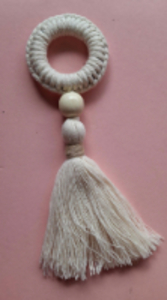

Colores Disponibles:
Corona navideña:
Ideal para poner como adorno en las puertas y sentir el espíritu navideño.
Alto: 16 cm
Colores Disponibles:

Ángel con alas:
Ideal para decorar puertas y colgar en tu árbol.
Alto: 14 cm
Colores Disponibles:
Alas:
Cuerpo:

Ángel sin alas:
Ideal para decorar puertas y colgar en tu árbol.
Alto: 12 cm
Colores Disponibles:

Servilleteros de árbol:
Ideal para decorar tu cena y sorprender a todos tus invitados.
Alto: 18 cm
Colores Disponibles:

Copo:
Un precioso adorno para tu árbol, puertas e incluso, una pared!.
Alto: 18, ancho: 18 cm
Colores Disponibles:

Papá Noél:
Un adorno para tu árbol para encender la llama de la navidad.
Alto: 20 cm
Colores Disponibles:
Sombrero:
Barba:

Ancho: 90 cm, largo 100 cm

“Feliz con mis ornamentos de navidad. Excelente calidad y buen precio.”
-Leydi